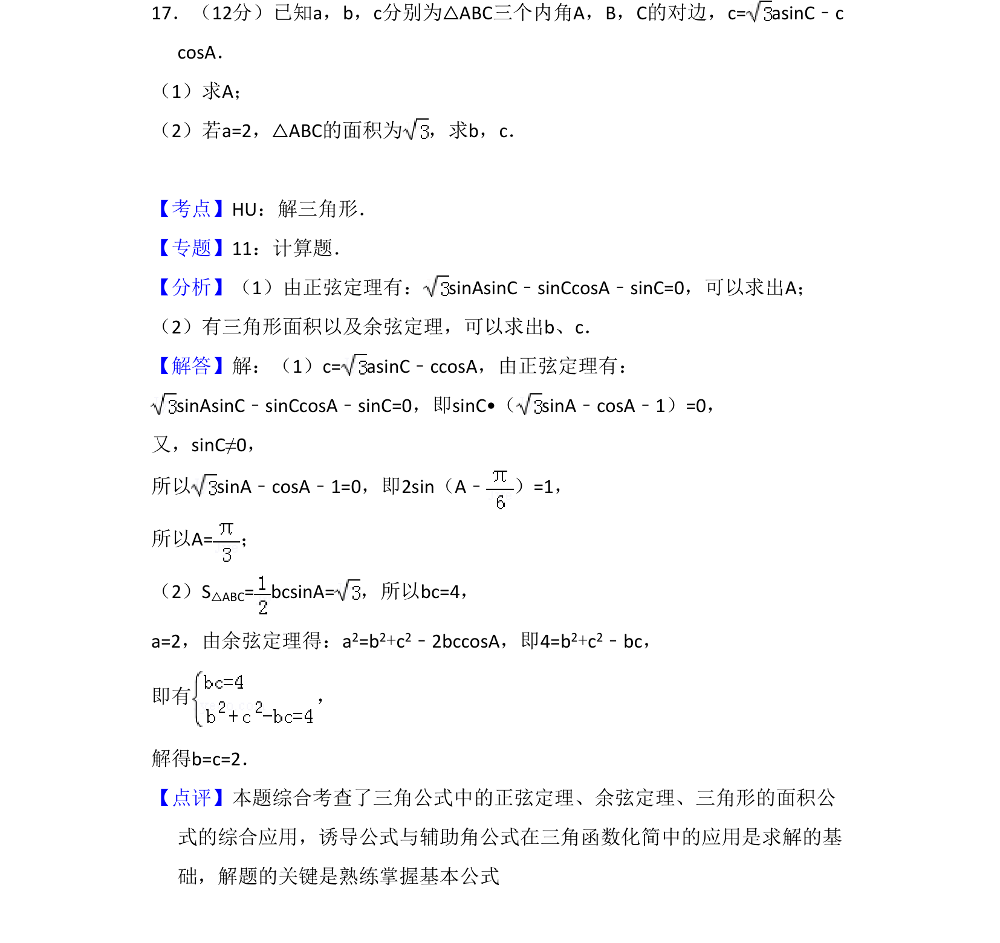
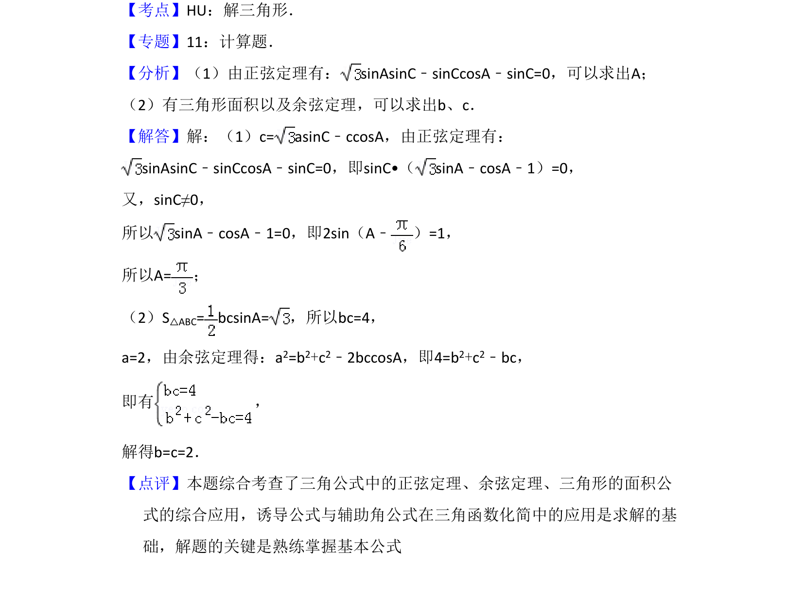

考点：正弦定理 余弦定理 三角形面积 辅助角公式

本题通过已知边角关系求角A，再利用三角形面积和余弦定理求边长b、c。

📄 原 PDF 第 13 页：
素材/真题/吉林/2008-2024·（吉林）数学高考真题/2012年高考数学试卷（文）（新课标）（解析卷）.pdf
17．（12分）已知a，b，c分别为△ABC三个内角A，B，C的对边，c= asinC﹣c cosA． （1）求A； （2）若a=2，△ABC的面积为 ，求b，c．
【考点】HU：解三角形．菁优网版权所有 【专题】11：计算题． 【分析】（1）由正弦定理有：sinAsinC﹣sinCcosA﹣sinC=0，可以求出A； （2）有三角形面积以及余弦定理，可以求出b、c． 【解答】解：（1）c= asinC﹣ccosA，由正弦定理有： sinAsinC﹣sinCcosA﹣sinC=0，即sinC•（sinA﹣cosA﹣1）=0， 又，sinC≠0， 所以sinA﹣cosA﹣1=0，即2sin（A﹣ ）=1， 所以A=； （2）S△ABC= bcsinA=，所以bc=4， a=2，由余弦定理得：a2=b2+c2﹣2bccosA，即4=b2+c2﹣bc， 即有 ， 解得b=c=2． 【点评】本题综合考查了三角公式中的正弦定理、余弦定理、三角形的面积公 式的综合应用，诱导公式与辅助角公式在三角函数化简中的应用是求解的基 础，解题的关键是熟练掌握基本公式